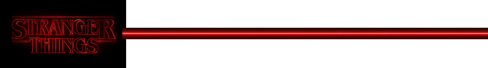

Stranger Things est une série télévisée américaine de science-fiction horrifique, créée par les frères Matt et Ross Duffer et diffusée depuis le 15 juillet 2016 sur Netflix. Elle compte en 2022 quatre saisons et trente-quatre épisodes. Une cinquième et dernière saison a été annoncée le 17 février 2022, celle-ci est prévue pour 2025.
L'ambiance de la série est fortement inspirée par les films fantastiques et de science-fiction et horreur des années 1980, puisant ses influences dans les œuvres de H. P. Lovecraft, Steven Spielberg, John Carpenter, John Hughes ou Stephen King.
Stranger Things est l'une des séries diffusées en streaming sur Netflix les plus regardées dans le monde.